我们把函子描述为保持结构的范畴间映射。函子把一个范畴“嵌入”另一个范畴；它可能把多个东西折叠成一个，却绝不切断连接。也可以说，我们借助函子在另一个范畴内部对一个范畴建模：源范畴充当蓝图，描述目标范畴中某部分结构。
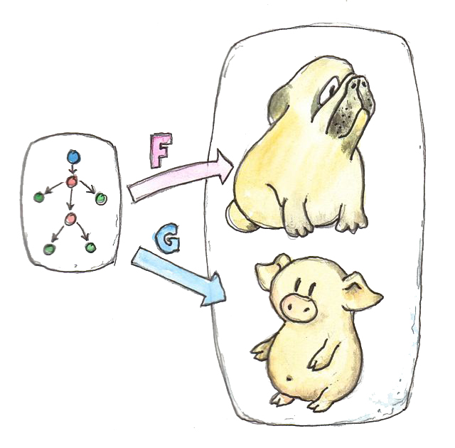
一个范畴嵌入另一个范畴可以有许多方式。有时它们等价，有时截然不同：一个可能把整个源范畴压成单个对象；另一个可能把每个对象、每支态射分别映射到不同对象与态射。同一蓝图可以有许多实现。自然变换帮助比较这些实现。它们是函子之间的映射，而且是保持函子性质的特殊映射。
考虑范畴 C 与 D 之间的两个函子 F、G。只看 C 中一个对象 a，它分别映射到 F a 与 G a。函子之间的映射因此应把 F a 映射到 G a。
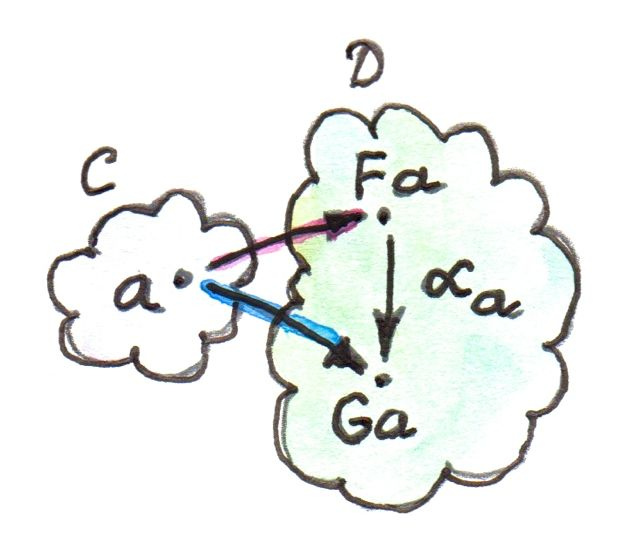
F a、G a 是同一范畴 D 中的对象。同一范畴对象间的映射不应违背范畴自身的纹理；我们不想人为创造连接。因此，使用已有连接——态射——最为“自然”。自然变换为每个对象 a 选择一支从 F a 到 G a 的态射。若自然变换称为 α，这支态射称为 α 在 a 处的分量（component），记作 αa：
记住，a 是 C 中的对象，而 αa 是 D 中的态射。若某个 a 对应的 F a 与 G a 之间没有 D 中的态射，F 与 G 之间就不可能存在自然变换。
这还只是故事的一半，因为函子不只映射对象，也映射态射。自然变换怎样处理这些映射？事实是态射映射已经固定：任何 F 到 G 的自然变换都必须把 F f 变为 G f。更重要的是，两个函子对态射的映射大幅限制了兼容自然变换的选择。考虑 C 中从 a 到 b 的态射 f，它在 D 中映射为：
G f: G a → G b
自然变换 α 还提供两支态射，补全 D 中的图：
αb: F b → G b
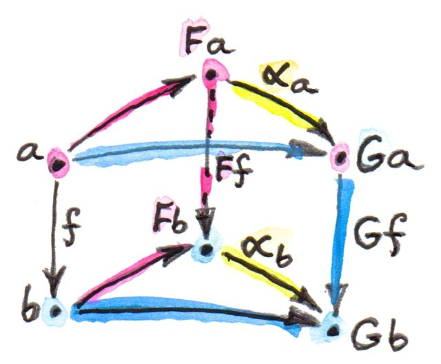
现在从 F a 到 G b 有两条路径。为保证它们相等，必须对任意 f 施加自然性条件（naturality condition）：
自然性条件要求很严格。例如，若 F f 可逆，自然性会用 αa 确定 αb，也就是沿 f 传输 αa：
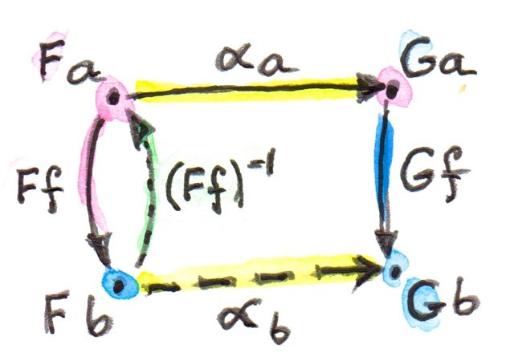
若两对象间有多支可逆态射，所有传输都必须一致。一般态射并不可逆，但由此也能看出：两个函子之间存在自然变换远非理所当然。由自然变换相连的函子是稀少还是丰富，会揭示函子所连接范畴的许多结构；讨论极限与 Yoneda 引理时会看到例子。
逐分量看，可以说自然变换把对象映射到态射；由于自然性条件，也可以说它把态射映射到交换方块——C 中每支态射在 D 中都有一个交换的自然性方块（naturality square）。
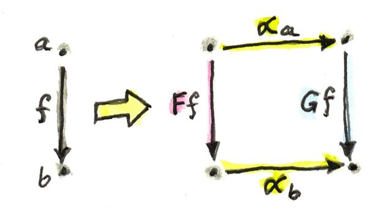
这项性质在很多包含交换图的范畴构造中极其方便。恰当选择函子后，许多交换条件可以转化成自然性条件。讨论极限、余极限和伴随时会看到。
最后，自然变换还可定义函子同构。说两个函子自然同构，几乎就是在说它们相同。自然同构（natural isomorphism）是所有分量均为同构（可逆态射）的自然变换。
多态函数
我们讨论过函子——更准确说自函子——在编程中的角色。它们对应把类型映射到类型的类型构造器，也把函数映射到函数；后者由高阶函数 fmap（或 C++ 中的 transform、then 等）实现。
构造自然变换时，从对象——这里是类型 a——出发。函子 F 把它映射为 F a，函子 G 映射为 G a。自然变换 alpha 在 a 处的分量是从 F a 到 G a 的函数。伪 Haskell 写作：
自然变换是对所有类型 a 定义的多态函数：
alpha :: forall a . F a -> G aHaskell 中 forall a 可省略（显式写出反而需要开启 ExplicitForAll 扩展），通常写成：
alpha :: F a -> G a要记住，它其实是由 a 参数化的一族函数。这再次体现 Haskell 语法的简洁。C++ 中类似构造稍显冗长：
template<typename A> G<A> alpha(F<A>);Haskell 多态函数与 C++ 泛型函数还有更深的差别，体现在实现与类型检查方式上。Haskell 多态函数必须对所有类型采用统一定义：同一公式适用于全部类型。这叫参数多态（parametric polymorphism）。
C++ 默认支持特设多态（ad hoc polymorphism），模板不必对所有类型都有定义。模板能否用于某个类型，要等实例化时以具体类型替换参数才决定。类型检查被推迟，遗憾的是常产生难以理解的错误信息。
C++ 还支持函数重载和模板特化，允许同一函数针对不同类型拥有不同定义。Haskell 以类型类和类型族提供这项能力。
Haskell 参数多态带来意外结果：任何类型为：
alpha :: F a -> G a且 F、G 都是函子的多态函数，会自动满足自然性条件。范畴记法如下（f: a→b）：
Haskell 中，函子 G 对态射 f 的作用由 fmap 实现。先用带显式类型标注的伪 Haskell 写：
fmap_G f . alpha_a = alpha_b . fmap_F f由于类型推断，不需要这些标注，下面的等式成立：
fmap f . alpha = alpha . fmap f这仍不是实际 Haskell，因为代码中不能表达函数相等；但程序员可以在等式推理中使用它，编译器也可用它优化。
Haskell 中自然性自动成立，原因与“免费定理”有关。用于定义自然变换的参数多态对实现施加极强限制：一个公式适用于所有类型。这些限制转化成关于函数的等式定理。对变换函子的函数而言，免费定理就是自然性条件。（可进一步阅读作者博客 Parametricity: Money for Nothing and Theorems for Free。）
此前把 Haskell 函子看作广义容器。延续这个类比，自然变换就是把一个容器内容重新包装到另一容器的配方。我们不触碰项目本身：既不修改，也不新建，只是把其中一些复制到新容器，有时复制多份。
自然性条件表示：先用 fmap 修改项目再重新包装，与先重新包装再用新容器自己的 fmap 修改项目，结果无关次序。重新包装与 fmap 相互正交：“一个搬鸡蛋，另一个煮鸡蛋。”
看几个 Haskell 自然变换例子。第一个位于 list 函子与 Maybe 函子之间：列表非空时返回表头。
safeHead :: [a] -> Maybe a
safeHead [] = Nothing
safeHead (x:xs) = Just x它关于 a 多态，无限制地适用于任何 a，所以是参数多态，也是两个函子之间的自然变换。仍可验证自然性：
fmap f . safeHead = safeHead . fmap f空列表时：
fmap f (safeHead []) = fmap f Nothing = NothingsafeHead (fmap f []) = safeHead [] = Nothing非空列表时：
fmap f (safeHead (x:xs)) = fmap f (Just x) = Just (f x)safeHead (fmap f (x:xs)) =
safeHead (f x : fmap f xs) = Just (f x)这里使用 list 的 fmap：
fmap f [] = []
fmap f (x:xs) = f x : fmap f xs以及 Maybe 的 fmap：
fmap f Nothing = Nothing
fmap f (Just x) = Just (f x)当一个函子是平凡的 Const 时很有意思。从或到 Const 的自然变换，看起来就像返回类型或参数类型多态的函数。
例如，length 可视为从 list 函子到 Const Int 的自然变换：
length :: [a] -> Const Int a
length [] = Const 0
length (x:xs) = Const (1 + unConst (length xs))unConst 用来剥去 Const 构造器：
unConst :: Const c a -> c
unConst (Const x) = x实践中 length 当然定义为：
length :: [a] -> Int这实际上隐藏了它是自然变换的事实。
寻找从 Const 函子出发的参数多态函数稍难，因为需要凭空创造一个值。我们最多只能做到：
scam :: Const Int a -> Maybe a
scam (Const x) = Nothing另一个常见函子是 Reader，它会在 Yoneda 引理中扮演重要角色。用 newtype 重写：
newtype Reader e a = Reader (e -> a)它由两个类型参数化，但只在第二个参数上协变：
instance Functor (Reader e) where
fmap f (Reader g) = Reader (\x -> f (g x))对于每种类型 e，都能定义从 Reader e 到任意函子 f 的一族自然变换。以后会看到，这族成员总与 f e 的元素一一对应（Yoneda 引理）。
例如，单位类型 () 只有元素 ()。函子 Reader () 把任意类型 a 映射到函数类型 () -> a，也就是从集合 a 中选出单个元素的全部函数，其数量与 a 的元素数量相同。考虑从该函子到 Maybe 的自然变换：
alpha :: Reader () a -> Maybe a只有两个：dumb 与 obvious：
dumb (Reader _) = Nothing以及：
obvious (Reader g) = Just (g ())（对 g 唯一能做的事，就是把它应用于单位值 ()。）正如 Yoneda 引理预测的，这两者对应 Maybe () 的两个元素 Nothing 与 Just ()。以后会回到 Yoneda 引理；这里只是预告。
超越普通自然性
两个函子之间的参数多态函数（包括 Const 的边界情况）总是自然变换。所有标准代数数据类型都是函子，所以这类类型之间的任何多态函数都是自然变换。
我们还有函数类型，它在返回类型上具有函子性。可以用函数类型构造 Reader 等函子，并定义作为高阶函数的自然变换。
不过函数类型在参数类型上不协变，而是逆变。当然，逆变函子等价于从对偶范畴出发的协变函子。两个逆变函子之间的多态函数，在范畴意义上仍是自然变换，只是它们作用于从对偶范畴到 Haskell 类型的函子。
还记得逆变函子例子：
newtype Op r a = Op (a -> r)它在 a 上逆变：
instance Contravariant (Op r) where
contramap f (Op g) = Op (g . f)可写出从 Op Bool 到 Op String 的多态函数：
predToStr (Op f) = Op (\x -> if f x then "T" else "F")两个函子不协变，所以它不是 Hask 中的自然变换。但由于二者都逆变，它们满足“反向”自然性条件：
contramap f . predToStr = predToStr . contramap f注意，因为 contramap 的签名，函数 f 必须朝与 fmap 相反的方向：
contramap :: (b -> a) -> (Op Bool a -> Op Bool b)是否存在既非协变函子也非逆变函子的类型构造器？例如：
a -> a它不是函子，因为同一个 a 同时出现在负位置（逆变）与正位置（协变）。无法为它实现 fmap 或 contramap。因此签名：
(a -> a) -> f a其中 f 是任意函子，这样的函数不可能是自然变换。有趣的是，自然变换有一种推广叫双自然变换（dinatural transformation），专门处理这类情况；讨论端时会看到。
函子范畴
既然有函子之间的映射——自然变换——自然会问函子是否构成范畴。确实如此！每对范畴 C、D 都对应一个函子范畴。其对象是从 C 到 D 的函子，态射是这些函子之间的自然变换。
需要定义两个自然变换的复合，而这很容易：自然变换的分量是态射，我们知道怎样复合态射。
设 α 是从 F 到 G 的自然变换，它在对象 a 处的分量为：
要把 α 与从 G 到 H 的自然变换 β 复合；β 在 a 处的分量是：
两者可复合为：
把这支态射作为自然变换 β·α——先 α 后 β——的分量：
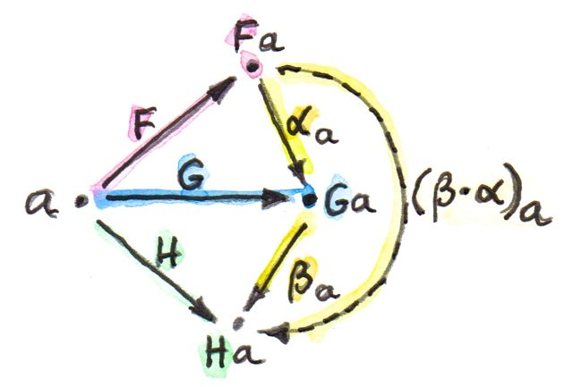
看图足够久，就能确信复合结果确实是从 F 到 H 的自然变换：
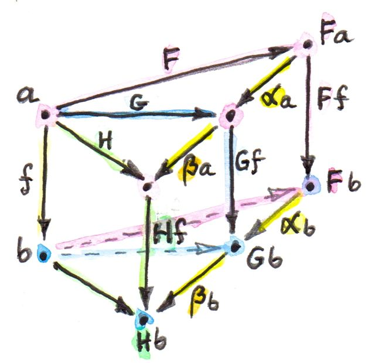
自然变换的复合满足结合律，因为它们的分量是普通态射，而普通态射复合满足结合律。
最后，每个函子 F 都有恒等自然变换 1F，其分量为恒等态射 idF a: F a→F a。因此，函子确实构成范畴。
说一下记法。遵循 Saunders Mac Lane，我用点号表示刚描述的自然变换复合。问题在于自然变换有两种复合方式。这一种称为垂直复合（vertical composition），因为描述它的图通常把函子竖直堆叠。垂直复合对于定义函子范畴至关重要；稍后解释水平复合。
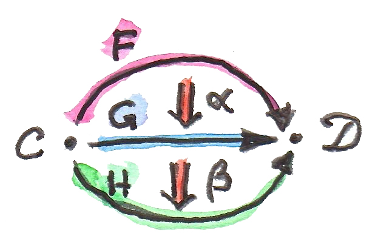
C、D 之间的函子范畴（functor category）记作 Fun(C,D)、[C,D]，有时也写成 DC。最后一种记法暗示函子范畴可能是某个更高范畴中的函数对象（指数对象）。确实如此吗？
回顾目前建立的抽象层级。起点是由对象与态射组成的范畴。范畴自身（严格说是对象构成集合的小范畴）又成为更高层范畴 Cat 中的对象；Cat 中的态射是函子。Cat 的 hom 集是函子集合，例如 Cat(C,D) 是 C、D 之间的函子集合。
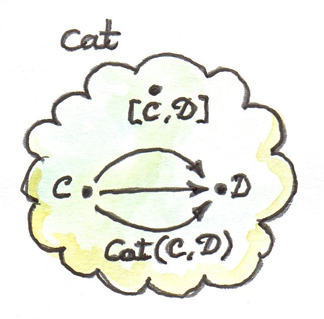
函子范畴 [C,D] 也包含 C、D 之间的一组函子（外加作为态射的自然变换）。其对象与 Cat(C,D) 的成员相同。此外，函子范畴本身是范畴，因而必须是 Cat 的对象（两个小范畴间的函子范畴仍然是小范畴）。这在同一范畴内建立了 hom 集与对象的关系，与上一章的指数对象完全相同。看看怎样在 Cat 中构造它。
构造指数前先定义积。在 Cat 中这相对容易，因为小范畴的对象形成集合，而我们知道怎样取集合的笛卡尔积。积范畴 C×D 中的对象是一对 (c,d)，分别来自 C、D。两对对象 (c,d) 与 (c′,d′) 之间的态射是一对态射 (f,g)，其中 f:c→c′、g:d→d′。态射对逐分量复合，恒等也是一对恒等态射。简而言之，Cat 是完整的笛卡尔闭范畴，任意两范畴都有指数对象 DC。这里 Cat 中的“对象”是范畴，所以 DC 是范畴，可以与 C、D 之间的函子范畴等同。
2-范畴
进一步观察 Cat。按定义，Cat 的任意 hom 集都是函子集合。但已看到，两对象间的函子拥有比集合更丰富的结构：它们构成范畴，自然变换充当态射。由于函子在 Cat 中被视为态射，自然变换就是态射之间的态射。
这种更丰富的结构是 2-范畴（2-category） 的例子。它推广普通范畴：除对象与态射（在此语境可称 1-态射）之外，还有态射之间的态射，即 2-态射。
把 Cat 看成 2-范畴时：
- 对象：小范畴；
- 1-态射：范畴之间的函子；
- 2-态射：函子之间的自然变换。
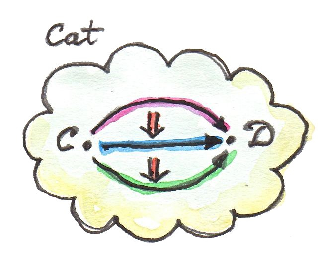
C、D 之间不再只有 hom 集，而有 hom 范畴——函子范畴 DC。还存在普通函子复合：从 C 到 D 的 F 与从 D 到 E 的 G 复合为从 C 到 E 的 G∘F。每个 hom 范畴内部还有一种复合，即函子间自然变换（2-态射）的垂直复合。
2-范畴有两种复合，于是要问它们怎样相互作用。
选择 Cat 中两个函子或 1-态射：
G: D → E
以及它们的复合 G∘F: C→E。再假设自然变换 α、β 分别作用于 F、G：
β: G → G′
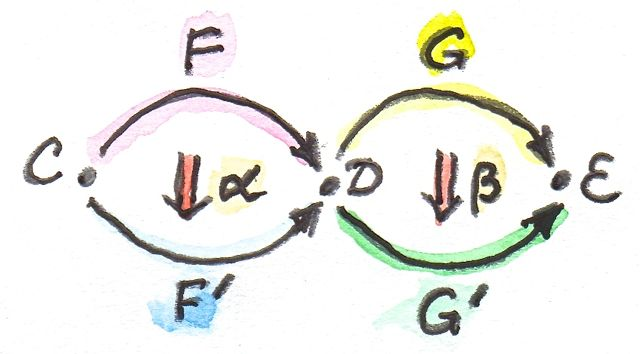
不能对 α、β 做垂直复合，因为 α 的目标与 β 的源不同；实际上二者属于不同函子范畴 DC 与 ED。不过 F′、G′ 可以复合，因为 F′ 的目标就是 G′ 的源 D。那么 G′∘F′ 与 G∘F 有什么关系？
手里有 α、β，能否定义从 G∘F 到 G′∘F′ 的自然变换？下面勾勒构造。
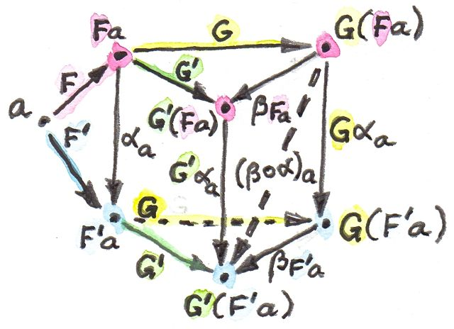
照例，从 C 中对象 a 出发。它在 D 中分成两个像 F a、F′a，并由 α 的分量连接：
从 D 到 E 后，这两个对象进一步分成四个：G(Fa)、G′(Fa)、G(F′a)、G′(F′a)，并有四支态射组成方块。其中两支是 β 的分量：
βF′a: G(F′a) → G′(F′a)
另外两支是两个函子对 αa 的映射：
G′ αa: G′(Fa) → G′(F′a)
态射很多。目标是找从 G(Fa) 到 G′(F′a) 的态射，作为连接 G∘F 与 G′∘F′ 的自然变换分量。其实有两条路径：
βF′a ∘ Gαa
幸运的是两者相等，因为这个方块正是 β 的自然性方块。
我们刚定义了从 G∘F 到 G′∘F′ 的自然变换分量。只要有足够耐心，证明其自然性相当直接。
该自然变换称为 α 与 β 的水平复合（horizontal composition）：
继续遵循 Mac Lane，我用小圆圈表示水平复合；也有文献使用星号。
范畴论经验法则：每次遇到复合，都应该寻找一个范畴。自然变换的垂直复合属于函子范畴；水平复合又属于什么范畴？
要弄清这一点，可从侧面观察 Cat。不要把自然变换看成函子之间的箭头，而看成范畴之间的箭头。一个自然变换位于被其变换的函子所连接的两个范畴之间，因此也可认为它连接这两个范畴。
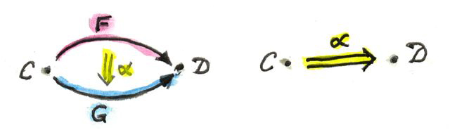
聚焦 Cat 的两个对象 C、D。连接 C 到 D 的函子之间有一组自然变换，可把它们视为从 C 到 D 的新箭头。同理，连接 D 到 E 的函子之间的自然变换可作为从 D 到 E 的新箭头。水平复合就是这些箭头的复合。
还有从 C 到 C 的恒等箭头：它是把 C 上恒等函子映射到自身的恒等自然变换。注意，水平复合的恒等也是垂直复合的恒等，反之不成立。
最后，两种复合满足交换律（interchange law）：
借用 Saunders Mac Lane 的话：“读者也许会乐于画出证明这一事实所需的那些显然图表。”
还有一种以后有用的记法。在从侧面解释 Cat 时，从对象到对象有两种方式：函子或自然变换。不过，可把函子箭头重解释为特殊自然变换——作用于该函子的恒等自然变换。因此常见记法：
其中 F 是从 D 到 E 的函子，α 是从 C 到 D 的两个函子之间的自然变换。由于函子不能直接与自然变换复合，这被解释成恒等自然变换 1F 在 α 之后的水平复合。
类似地，α∘F 是 α 在 1F 之后的水平复合。
小结
本章结束了全书第一部分。我们已经学会范畴论的基本词汇。可以把对象和范畴视为名词，把态射、函子、自然变换视为动词：态射连接对象，函子连接范畴，自然变换连接函子。
但也看到，在一个抽象层级看似动作的东西，到下一级会成为对象。态射集合变成函数对象；作为对象，它又能成为另一支态射的源或目标。这正是高阶函数背后的思想。
函子把对象映射到对象，所以可用作类型构造器或参数化类型；函子也映射态射，所以又是高阶函数 fmap。Const、积和余积等简单函子能够生成大量代数数据类型。函数类型同样具有函子性，既协变又逆变，可用于扩展代数数据类型。
函子还能作为函子范畴中的对象；于是它们成为态射——自然变换——的源与目标。自然变换则是一类特殊的多态函数。
习题
- 定义从
Maybe函子到 list 函子的自然变换，并证明自然性。点击展开参考答案
maybeToList :: Maybe a -> [a] maybeToList Nothing = [] maybeToList (Just x) = [x]对任意
f:a→b：Nothing分支两边都为[]；Just x分支，fmap f (maybeToList (Just x))=[f x]，而maybeToList (fmap f (Just x))=[f x]。故fmap f . maybeToList = maybeToList . fmap f。 - 定义至少两个从
Reader ()到 list 函子的不同自然变换。()的不同列表有多少个？点击展开参考答案
none (Reader _) = [] once (Reader g) = [g ()] twice (Reader g) = [g (), g ()]对每个自然数
n≥0，都可把g()重复n次，因此至少有可数无穷多个自然变换。[()]的每个有限列表只由长度决定，所以也恰有可数无穷多个，与 Yoneda 预测一致。 - 把上一题改为
Reader Bool与Maybe。点击展开参考答案
按 Yoneda，引出的自然变换与
Maybe Bool的元素一一对应，共三个：始终返回Nothing；返回Just (g False)；返回Just (g True)。n (Reader g) = Nothing atFalse (Reader g) = Just (g False) atTrue (Reader g) = Just (g True) - 证明自然变换的水平复合满足自然性（提示：使用分量）。
点击展开参考答案
令水平复合分量
γₐ = β_{F′a} ∘ Gαₐ。对f:a→b：G′F′f ∘ γₐ
= G′F′f ∘ βF′a ∘ Gαₐ
= βF′b ∘ GF′f ∘ Gαₐ
= βF′b ∘ Gαb ∘ GFf
= γb ∘ GFf第二步用 β 的自然性，第三步用 α 的自然性经 G 映射后的等式，因此 γ 自然。
- 写一篇短文，谈谈为什么你也许会乐于画出证明交换律所需的那些显然图表。
点击展开参考答案
所谓“显然”，往往只是把四个自然变换的分量放到同一张网格后，每个小方块都由自然性交换。逐符号展开会同时混入水平与垂直两种复合，容易写错顺序；图表却把类型兼容性、路径起终点和两条总路径的相等直接显现出来。乐趣不在机械绘图，而在发现宏观交换律只是若干局部交换方块的拼接。
- 为不同
Op函子之间变换的反向自然性条件编写几个测试。可使用：op :: Op Bool Int op = Op (\x -> x > 0)以及：
f :: String -> Int f x = read x点击展开参考答案
predToStr (Op p) = Op (\x -> if p x then "T" else "F") left = contramap f (predToStr op) right = predToStr (contramap f op) test = case (left, right) of (Op l, Op r) -> l "1" == r "1" && l "0" == r "0" && l "-2" == r "-2"两边都先用
read把字符串变成整数，再判断是否为正，最后编码为"T"/"F"，所以所有测试相等。